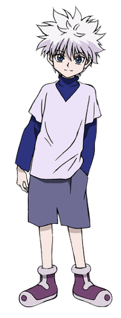

Killua Zoldyck (キルア=ゾルディック, Kirua Zorudikku) adalah karakter utama dalam serial Hunter x Hunter karya Yoshihiro Togashi. Ia berasal dari keluarga Zoldyck, klan legendaris yang dikenal sebagai pembunuh bayaran paling berbahaya di dunia. Dari kecil, Killua dididik untuk menjadi pembunuh tanpa emosi dengan kekuatan dan keterampilan yang luar biasa. Namun, ia memiliki jiwa pemberontak dan memilih untuk meninggalkan keluarganya demi mencari kebebasan dan makna hidup di luar bayang-bayang profesi keluarganya. Keputusan ini menjadi awal dari petualangannya yang penuh tantangan.
Persahabatan Killua dengan Gon Freecss menjadi bagian penting dari perjalanan hidupnya. Di balik sikapnya yang ceria dan usil, Killua sangat peduli dan setia pada Gon, bahkan rela menghadapi bahaya demi melindungi sahabatnya. Hubungan mereka membantu Killua untuk melepaskan trauma masa lalu dan mengembangkan rasa percaya diri. Namun, di sisi lain, masa lalunya sebagai pembunuh kerap menghantuinya, membuatnya terjebak antara insting melawan dan keinginannya untuk hidup normal.
Selain keterampilan fisik yang hebat, Killua memiliki kemampuan Nen dan teknik listrik andal bernama Godspeed, yang membuatnya sangat cepat dan mematikan. Meskipun terbiasa dengan kekerasan, perkembangan emosionalnya terlihat jelas sepanjang cerita. Ia belajar bahwa kekuatan bukanlah segalanya, dan kebahagiaan sejati bisa ditemukan melalui hubungan yang tulus. Kompleksitas kepribadiannya menjadikan Killua salah satu karakter paling menarik dan dicintai oleh para penggemar.
Salah satu hal yang membuat Killua menarik adalah perjuangannya melawan dirinya sendiri. Meskipun terlatih untuk tidak memiliki rasa takut atau rasa bersalah, Killua secara bertahap membuka dirinya terhadap perasaan tersebut, terutama saat berinteraksi dengan Gon dan teman-teman mereka. Ini membuatnya lebih dari sekadar pembunuh berbakat, tetapi juga seorang anak muda yang mencari identitasnya di dunia yang penuh bahaya.
Dengan segala kompleksitasnya, Killua tetap menjadi karakter favorit penggemar, tidak hanya karena keterampilan tempurnya yang hebat, tetapi juga karena sisi kemanusiaannya yang dalam, perjuangannya untuk menyeimbangkan kekuatan dan perasaannya, serta transformasinya dari seorang pembunuh menjadi sahabat setia yang rela melakukan apa pun untuk melindungi orang-orang yang ia sayangi.
|  | |
|---|---|
| Killua Zoldyck | |
| Kana | キルア=ゾルディック |
| Rōmaji | Kirua Zorudikku |
| Profil | |
| Kelamin | Laki-laki |
| Umur |
12 (Awal) 14 (Sekarang) |
| Tinggi | 158 cm; 5'2" |
| Berat | 49 kg; 107.8 lbs |
Killua memiliki rambut lebat perak, kulit yang sangat terang dan mata biru. Perubahan Matanya tergantung pada suasana hatinya berada, penyempitan dan mengasah ketika ia masuk ke mode pembunuh. Dalam anime adaptasi Nippon Animation, warna mata Killua berubah menjadi hijau selama OVA. Dia juga sering terlihat memegang skateboard hijau (berubah menjadi kuning dalam seri 2011).
Killua biasanya memakai pakaian longgar, dengan pakaian biasa yang terdiri dari kemeja lengan panjang berwarna gelap. Sebagian besar dari pakaiannya memiliki turtleneck. Killua memakai celana panjang, celana pendek longgar dalam manga dan diadaptasi animasi Madhouse, tapi desain karakter Nippon Animation dipersingkat mereka untuk mencapai di atas lututnya. Killua juga memakai sepatu biru dan putih, digambarkan berwarna coklat dan hitam dalam adaptasi Nippon Animation.
Awalnya, Killua diperkenalkan sebagai karakter yang tampaknya mirip dengan Gon tetapi berbeda pada saat yang sama; berwajah tebal, ceria, dan penuh ide-ide nakal. Ia juga salah satu karakter pemikiran-tercepat dalam seri. Ia yakin dengan kemampuan sendiri, sering menjadi rendah hati tentang hal itu; tetapi ketika seseorang memuji dirinya, terutama Gon, ia mendapat malu mudah. Killua juga dikenal karena memiliki gigi manis, karena dia menghabiskan hampir 200 juta Jenny pada makanan ringan ketika ia berada di Arena Surga. Camilan favoritnya adalah cokelat, khususnya Chocolate Balls.
Namun, kekejaman dan bakat dalam membunuh menunjukkan sisi lain dari dirinya - yang mematikan, keras, dan haus darah. Setelah disiksa sejak lahir, Killua telah dikondisikan untuk memiliki toleransi ekstrim untuk racun, listrik dan nyeri. Killua memiliki kelincahan yang luar biasa dan kekuatan yang membuatnya menjadi one-man mesin pembunuh - pasti tidak satupun yang bisa dianggap enteng.
Bertentangan dengan predisposal Killua untuk membunuh adalah loyalitas pantang menyerah kepada teman-temannya dan kebaikan alam. Killua sering menderita sangat dalam upayanya untuk membantu teman-temannya tanpa keluhan. Dia menempatkan orang lain sebelum dirinya sendiri tanpa peduli kesehatan sendiri atau bahkan hidupnya.
Sampai saat ini, cacat terbesar Killua adalah rasa takutnya orang-orang yang tampaknya lebih kuat dari dia (salah satunya kakaknya, Illumi). Killua telah dilatih sebagai pembunuh oleh keluarganya untuk menjadi seseorang yang berhati-hati bahwa ia harus ikut dalam pertempuran apabila kemenangan mutlak terlihat jelas. Hal ini menghambat dia sebagai Hunter. Biscuit menyatakan lebih dari sekali kemenangan yang tidak pernah pasti, dan tergantung pada keadaan, seseorang memiliki potensi untuk mengalahkan lawan yang lebih kuat.
Killua lahir sebagai anak tengah dari keluarga pembunuh diketahui, Keluarga Zoldyck. Menampilkan janji besar sejak lahir, Killua telah menguasai banyak teknik membunuh pada usia tersebut, dan ditetapkan untuk menjadi salah satu pembunuh keluarga terbaik yang pernah diproduksi. Pada usia tiga tahun, ia mulai pelatihan pada membuntuti orang lain. Ia terpaksa bertarung di Arena Surga turnamen seni bela diri pada usia dari 6, di mana ia butuh dua tahun untuk sampai ke lantai 199 (meskipun ia diterima ke lantai ke-200, ia diundurkan diri oleh Ibunya). Killua memberitahu bahwa sejak lahir, ia telah berlatih sepenuhnya untuk sebagai seorang pembunuh profesional. Killua telah bertahun-tahun berusaha untuk mencoba teknik unik sempurna yang dilakukan dan dimiliki olah pembunuh lainnya.
Bosan dan lelah membunuh, Killua tiba-tiba memberontak terhadap keluarganya, melukai kedua nya ibu dan kakak kedua. Dan lari dari rumah untuk ikut Ujian Hunter untuk bersenang-senang[7] Ia bertemu Gon selama bagian pertama dari Ujian Hunter dan mereka menjadi yang terbaik dari teman-teman. Dia pikir bersama-sama dengan Gon, menjadi menarik dan merasakan petualang.